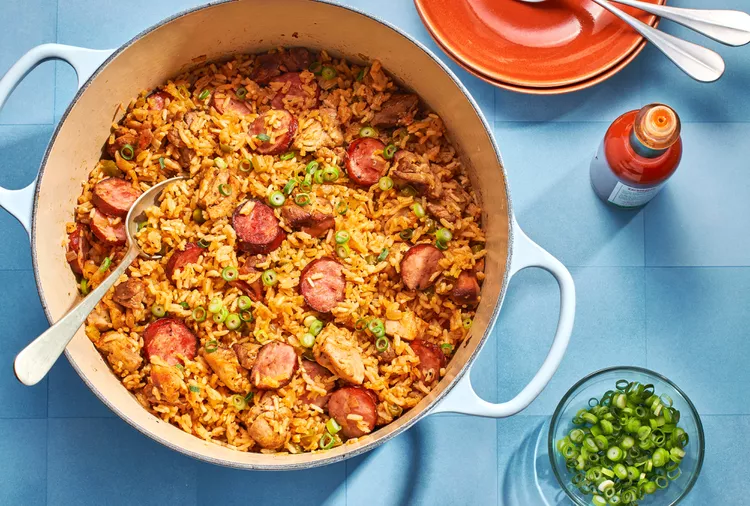

Home
Shane's Jambalaya

A Louisiana staple with all of the tastes of the Bayou
This recipe comes courtesy of a Louisiana native that used to attend my Church before moving back to his roots. He would put venison in it, but unless you've got some in your freezer, we're going to stick to chicken and sausage.
Ingredients
- 2-3 Lbs. Chicken Breast or Thighs
- 1.5-2 Lbs. Italian Sausage Link, cut into 1/2" pieces
- 2 Onions, diced
- 2 Yellow Bell Peppers, diced
- 3 tsp. Salt
- 3 tsp. Pepper
- 5 Tbsp. Parsley
- 6 Cloves Garlic, minced
- 3 tsp. Creole/Cajun Seasoning
- 3 Cups Chicken Broth
- 3 tsp. Hot Sauce
- 1 Stick Butter
- 1/2 Lb. Mushrooms, sliced
- 4 Cups Rice
- 28 oz. Diced Tomatoes
- 2 Cans Rotel
Steps
- Boil chicken for 1 hour. Reserve broth and shred chicken.
- Brown sausage in a half stick of butter.
- Add onion, garlic, and bell peppers. Saute in remaining butter.
- Place all remaining ingredients, save rice, in a large oven safe pot and bring to a boil.
- Add rice while stirring.
- Bake covered for 45 minutes at 400°F, stirring every 15 minutes.